My Favorite Manga and Webtoon
Manga
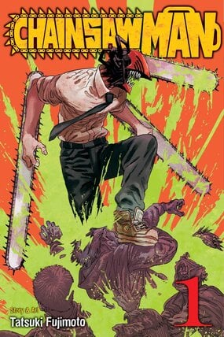Chainsaw Man
Genre:
Action, Fantasy, Horror, Shounen, Dark Fantasy,and Demons Adapted to Anime.
Denji's life of poverty is changed forever when he merges with his pet chainsaw dog, Pochita! Now he's living in the big city and an official Devil Hunter. But he's got a lot to learn about his new job and chainsaw powers!
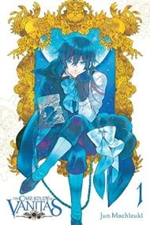
The Case Study of Vanitas
Author: Jun Mochizukir
Genre:
Action Adventure, Drama, Fantasy, Shounen, 19th Century, Europe, France, Historical, Human Experimentation Non-Human, Protagonists Steampunk, Supernatural Vampires, and Adapted to Anime.
Author: Jun Mochizuki
Rumors revolving around The Book of Vanitas, a clockwork grimoire of dubious reputation, draw Noé, a young vampire in search of a friend's salvation, to Paris. What awaits him in the City of Flowers, however, is not long hours treading the pavement or rifling through dusty bookshops in search of the tome. Instead, his quarry comes to him...in the arms of a man claiming to be a vampire doctor! Thrust into a conflict that threatens the peace between humans and vampires, will Noé cast in his lot with the curious and slightly unbalanced Vanitas and his quest to save vampirekind?
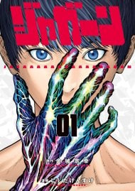
Jagaaaaaan
Authors: Muneyuki Kaneshiro, Kensuke Nishida
Genre:
Action, Seinen,and Supernatural
Shintarou Jagasaki, who is a neighborhood police officer, lives with his girlfriend while working a job that is killing him slowly with annoyance. It looks like he will end up marrying soon and live a boring life with a nuclear family - a grim future for a guy with dreams! One such day, a mysterious monster appeared on the train and he suddenly can shoot with his right hand like Master Buppanatsu, the eggplant mascot of his city!

Blue Lock
Authors: Authors: Muneyuki Kaneshiro, Yusuke Nomura
Genre:
Action, Drama, Shounen, Sports, Soccer, and Adapted to Anime
After a disastrous defeat at the 2018 World Cup, Japan’s team struggles to regroup. But what’s missing? An absolute Ace Striker, who can guide them to the win. The Football Association is hell-bent on creating a striker who hungers for goals and thirsts for victory, and who can be the decisive instrument in turning around a losing match…and to do so, they’ve gathered 300 of Japan’s best and brightest youth players. Who will emerge to lead the team…and will they be able to out-muscle and out-ego everyone who stands in their way?
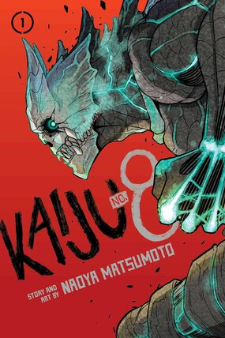
Kaiju No8
Author: Naoya Matsumoto
Genre:
Action, Horror, Sci Fi, Shounen, Kaijuu, Military, Monsters, Non-Human Protagonists, Overpowered Main Characters, and Secret Identity
With the highest kaiju-emergence rates in the world, Japan is no stranger to attack by deadly monsters. Enter the Japan Defense Force, a military organization tasked with the neutralization of kaiju. Kafka Hibino, a kaiju-corpse cleanup man, has always dreamed of joining the force. But when he gets another shot at achieving his childhood dream, he undergoes an unexpected transformation. How can he fight kaiju now that he’s become one himself?!
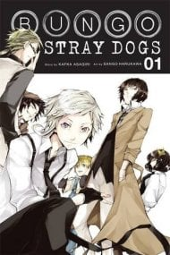
Bungo Stray Dog
Authors: Kafka Asagiri and Sango Harukawa
Genre:
Action, Drama, Mystery, Seinen, Detectives, Orphans, Supernatural, Superpowers, and Adapted to Anime
Having been kicked out of the orphanage, a despairing young man by the name of Atsushi Nakajima rescues a strange man from a suicide attempt--Osamu Dazai. Turns out that Dazai is part of an armed-detective agency staffed by individuals whose supernatural powers take on a literary bent!
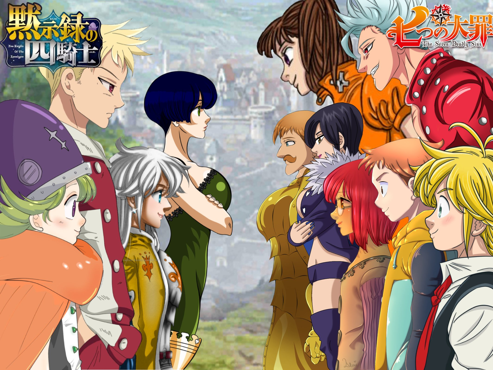
The Seven Deadly Sins: Four Knights of the Apocalypse
Author: Nakaba Suzuki
Genre:
Action, Adventure, Fantasy, Shounen, Demons, Magic, Medieval,and Superpowers
Percival has always lived with his grandfather on the idyllic, remote God's Finger. And though Percival loves the simple life, he longs for adventure. That is, until adventure comes knocking at his door, tearing away everything he's ever known and leaving him alone in the world. Now Percival has no choice but to go out into the world and see what it holds...after all, it's his destiny!
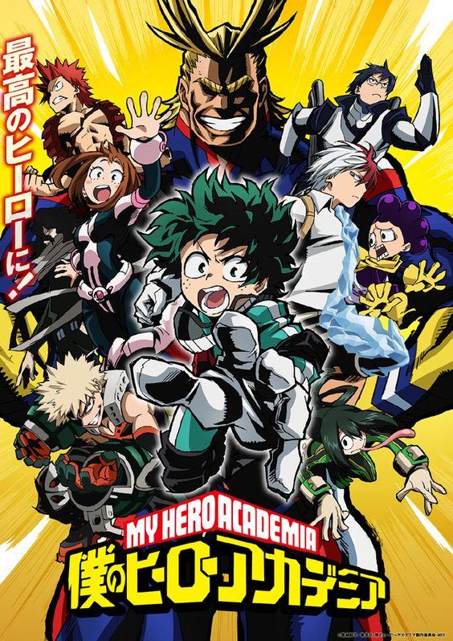
My Hero Academia
Author: Kohei Horikoshi
Genre:
Action, Comedy, Shounen, School Life, Superheroes, Superpowers, and Adapted to Anime
Middle school student Izuku Midoriya wants to be a hero more than anything, but he hasn’t got an ounce of power in him. With no chance of ever getting into the prestigious U.A. High School for budding heroes, his life is looking more and more like a dead end. Then an encounter with All Might, the greatest hero of them all, gives him a chance to change his destiny…
Webtoon
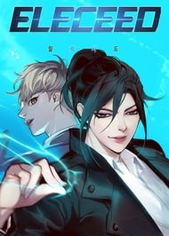Eleceed
Author:Son Je-Ho
Genre:
Action, Comedy, Manhwa, Webtoons, and Animal Transformation Cats Full Color Supernatural
Jiwoo is a kind-hearted young man who harnesses the lightning quick reflexes of a cat to secretly make the world a better place – one saved little child or foster pet at a time. Kayden is a secret agent on the run, who finds himself stuck in the body of a…um…decidedly fat old fluffy cat. Together, armed with Jiwoo’s super powers and Kayden’s uber-smarts, they’re out to fight those forces who would let evil rule this world. That is, if they can stand each other long enough to get the job done.
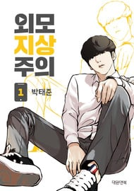
Lookism
Author:Park Tae-jun
Genre:
Action, Comedy, Manhwa, Webtoons, and Animal Transformation Cats, and Spernatural
Daniel is an unattractive loner who wakes up in a different body. Now tall, handsome, and cooler than ever in his new form, Daniel aims to achieve everything he couldn't before. How far will he go to keep his body... and his secrets?
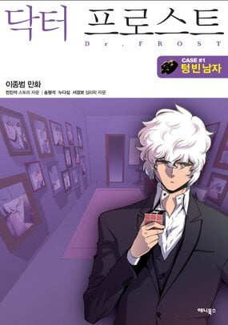 center>
Dr.Frost
Author:Lee Jong-Beom
Genre:
Drama,Manhwa,Webtoons,and Psychological
Frost is a genius psychologist who believes all humans are basically the same. His keen mastery in mind-reading will blow your mind and strike through your heart.

Solo Leveling
Author:Chugong
Genre:
Action,Adventure,Magic,Supernatural, and Monsters
E-class hunter Jinwoo Sung is the weakest of them all. Looked down on by everyone, he has no money, no abilities to speak of, and no other job prospects. So when his party finds a hidden dungeon, he's determined to use this chance to change his life for the better... but the opportunity he finds is a bit different from what he had in mind!
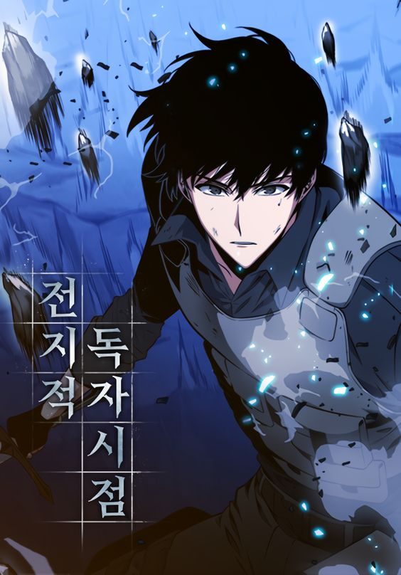
Omniscient Reader's Viewpoint
Author: Sing Shong
Genre:
Action,Adventure,Magic,Supernatural, and Monsters
Back then, Dokja had no idea. He had no idea his favorite web novel 'Three Ways to Survive the Apocalypse' was going to come to life, and that he would become the only person to know how the world was going to end. He also had no idea he would end up becoming the protagonist of this novel-turned-reality. Now, Dokja will go on a journey to change the course of the story and save humankind once and for all.